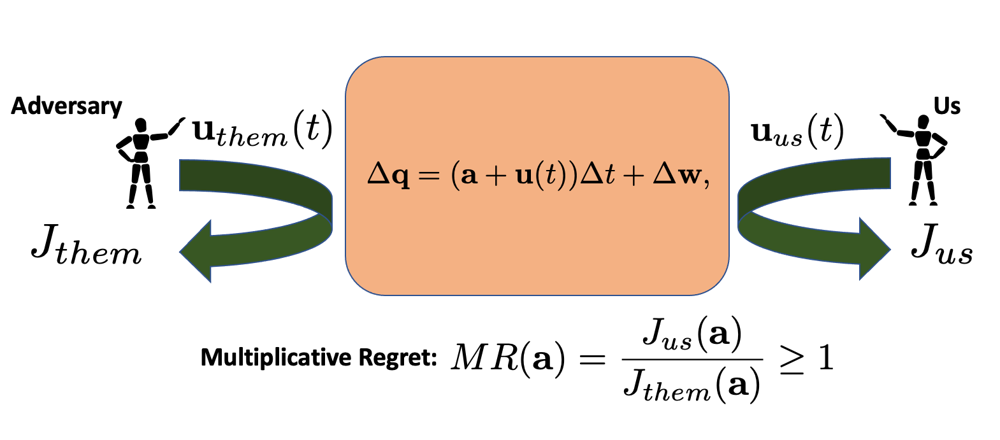
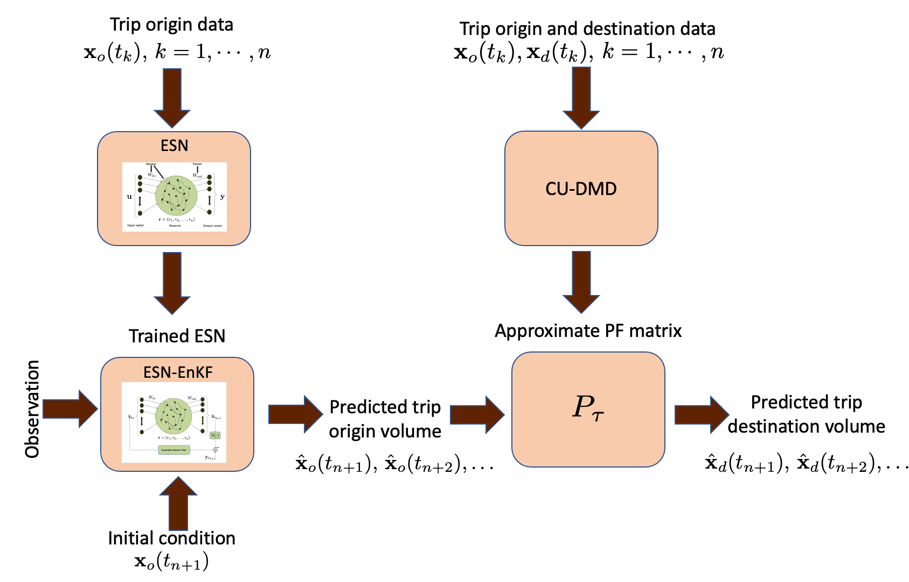
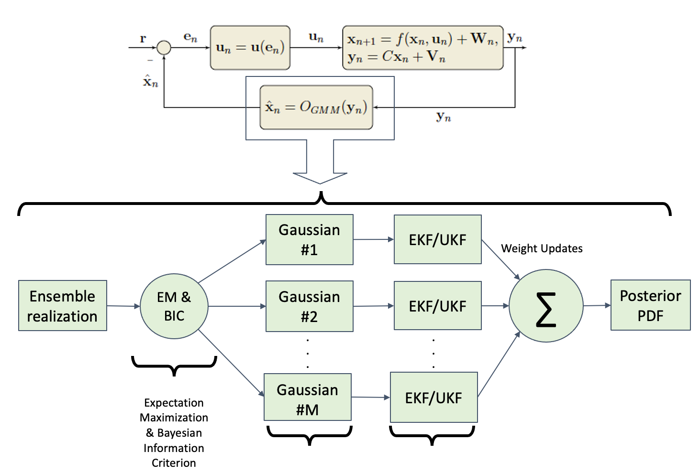

Research Projects
Current projects
Control with learning on the fly
|  | Project description: The objective of this project is to develop optimal control strategies for systems with unknown parameters while minimizing the “regret” that is incurred for the ignorance about the parameters. The deep learning methods are not feasible due to the lack of enough data, and the regret minimization must be carried out “on the fly”, i.e., while controlling the system. This project is a joint work between the groups of Prof. Clancy Rowly and Prof. Charles Fefferman. |
Past projects
Analysis and prediction of micromobility trends in the urban transport landscape
|  | Project description: This projects aims to analyze the trend of some emerging forms micromobility, e.g., electric scooters and bikes, and to predict its usage so that they can be deployed in a safer and more effective way. We plan to use the tools of machine learning and Markovian operator schemes to analyze and predict the different modes of mobility. A model based on the social force interaction is also used for Lagrangian analysis of the scooter/bike trajectories. The objective is to apply these results in order to aid an effective policymaking for the new urban mobility landscape. |
Data-driven sparse estimation of complex systems: An Echo-State Network approach
 |
Project description: This project considers the problem of data-driven estimation with sparse measurements for a complex nonlinear system. While there are rich literature of model-based nonlinear estimation methods, estimating the state from a partial observation with an unmodeled dynamics is still not widely investigated. Here we propose an echo-state network (ESN) based method of model-free estimation where a reasonable accurate set of training data is available for the training period, and then, sparse measurement can only be obtained during the testing phase. The objective is to apply the technique to predict the traffic congestion in different intersections of a road network from sparsely located traffic sensors. [Presentation] |
Lift maximization of a pitching airfoil
 |
Project description: This project implements the Goman-Khrabrov model for flow stagnation near an actuated airfoil with a feedback-controlled pitch rate for the purpose of maximizing the time-averaged unsteady lift. A nonlinear state-feedback control law is designed to stabilize unsteady pitching behavior. |
Data-driven control of nonlinear system using Koopman specrtral approach
 |
Project destcription: In this project, we propose a data-driven approach to bilinearize a control-affine nonlinear system using Koopman spectrum and design an optimal control using Pontryagin's Principle. |
Cooperative mapping and target search using mutual information
 |
Project description: This research is on cooperative mapping and search for detecting a single moving target in an urban environment that is initially unknown to a team of autonomous quadrotors equipped with noisy sensors with a limited field of view. |
Gaussian Mixture Model Kalman Filter for nonlinear filtering and output feedback control
|  | Project description: This project considers the problem of non-Gaussian estimation and output feedback in both linear and nonlinear settings. Estimation with non-Gaussian process noise, important in fields such as environmental sampling, is typically problem specific and suboptimal. We use the Gaussian Mixture Model (GMM) to approximate an unknown non-Gaussian distribution and to employ the Kalman filter and its nonlinear variants: the extended and unscented Kalman filters. |